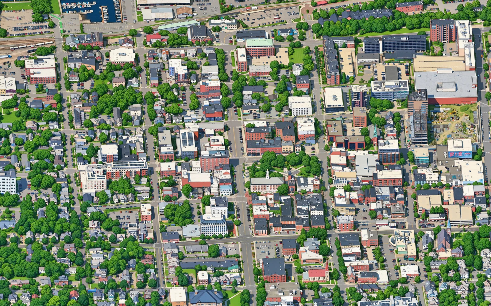
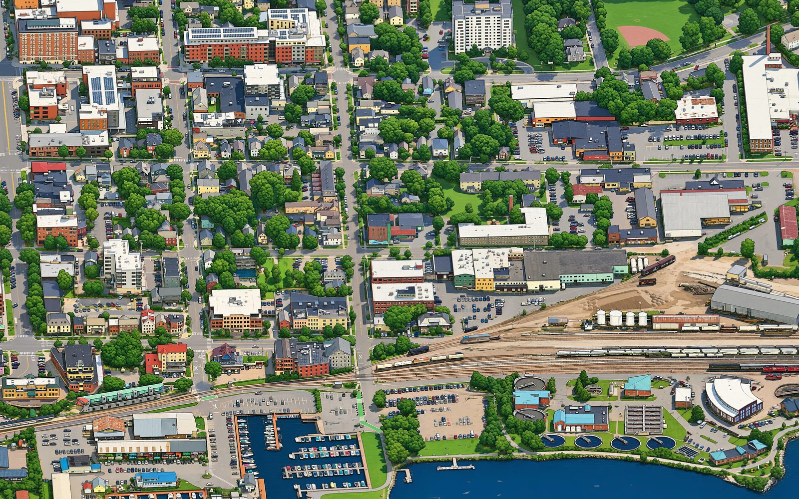
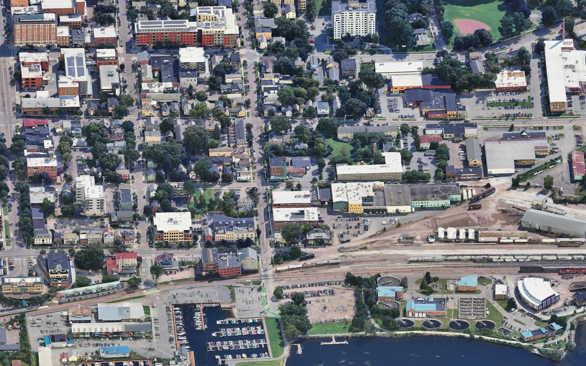

Isometric Burlington
How it was made, and what's wrong with it
I didn't draw this map. An AI image model did, one block at a time, and I spent my evenings getting it to behave. Here is exactly what that means, so you can decide for yourself what it's worth.
- 458blocks drawn, from four sides
- 133km² of city and lake
- 23cm of city in each pixel
- 1,061named streets
- 31,164street lamps lit at night
- 25bus routes on the timetable

Who did what
- photographed Burlington from the air and built the 3D model every picture starts from.
- A camera I set up
- looks at that model from 30 degrees up, from four sides, and takes 458 pictures that line up to the pixel. One pixel is 23 cm of city.
- A teacher model
- redrew about 400 of those pictures as illustrations: flat colour, dark outlines, a 1990s city-builder look. Automatic checks threw out the ones that moved a building or invented a lake.
- A student model
- the open-source Qwen-Image, learned the style from those pairs and then drew all of Burlington, South Burlington and Winooski, four times over.
- Me
- chose the area, the camera and the look, decided what counted as a failed drawing, threw out and redid the worst blocks, and built the map you move around in: the turning, the real sunset, the weather, the buses and the planes.
I'm not a software engineer, and I'm not an illustrator. I wrote almost none of the code by hand either. I directed AI tools the whole way through, the same way I'd brief a contractor.
Before and after
Drag across the picture. On one side is Google's 3D model of the waterfront, exactly as the camera saw it. On the other is the same view after the drawing model redrew it. Every building stays where it is; only the look changes.


Google's modelDrawnWhat's wrong with it
A neighbour on r/burlington put it better than I could: the charm wears off when you zoom in and see mushy textures and cars melting on the streets.
That's fair, and it's worth explaining.
- The cars melt. Google's 3D model turns every parked car into a soft blob, and the drawing model faithfully inks the blob. Fixing it means redrawing the map with the streets cleaned up first.
- It goes soft when you zoom far in. The drawing has a real size, 23 cm per pixel. Past that you're enlarging it, like holding a magnifying glass to a printed poster. The street names and labels that appear up close are drawn fresh at any size, so they stay sharp.
- Small details are invented. Signs are sign-shaped, not readable. A window count may be off. Your porch might be the wrong colour. It's an illustration of the city, not a survey of it.
- It's a snapshot. Google's imagery is a year or more old, so new buildings are missing and gone ones remain.
What a hand-drawn map has that this one doesn't is a person deciding, building by building, what matters. I can't fake that with pixels, so I've stopped trying to hide it and added what I can:
- Names drawn sharp on top. Street, neighbourhood, park and water names from OpenStreetMap are lettered over the drawing as you zoom in, and stay crisp at any size. They step out of the way where a building stands in front of the street.
- A paper grain. The closer you zoom, the more the map looks like a printed sheet you're leaning into, rather than a photo blown up too far.
- Places worth a look. The ★ button and the diamond pins mark a short list of spots around town, each with a note. It's a start, not a guidebook.
Credit where it's due
The method isn't mine. I followed Isometric Toronto by John Fewell, who followed Tiny London by Boris Starkov, who built on Isometric NYC by Andy Coenen. Each of them wrote down how they did it, which is the only reason someone like me could.
3D imagery © Google, via Cesium ion. Drawn with Qwen-Image. Map data and search © OpenStreetMap contributors. Weather from the National Weather Service; snow on the ground from Open-Meteo (CC BY 4.0). Bus schedule from Green Mountain Transit. Flights from adsb.lol (ODbL). A non-commercial hobby project.
What's changed
Snow on the ground turns the map white. Fireworks over the waterfront on July 3 and New Year's Eve, holiday lights on Church Street, and Champ, now and then, in the lake. See the fireworks · Look for Champ
Cars on the streets (simulated), real street lamps and lit windows at night, and buttons to share a view or save a picture of it. Downtown at night
Street and place names drawn sharp when you zoom in, a paper grain, and a few places worth a look (★). Church Street up close
The map goes up at isoburlington.com: four sides to turn, the real sunset, live weather, buses on the timetable and live planes. Open the map
The first test pictures of downtown, UVM and Winooski come out of Google's model.
Tell me what's wrong on your street
If the map gets your block badly wrong, or there's a place that deserves a note, I'd like to hear it. The longer story of building this is on my blog, morgz.org.